Clic para regresar al menu de jugadores
Descripcion de jugadores
Clic para ir a la seccion de Michael Jordan
Clic para ir a la seccion de Lebron James
Clic para ir a la seccion de kareem Abdul-Jabbar
Clic para ir a la seccion de Bill Rusell
Clic para ir a la seccion de ‘Magic’ Johnson
Clic para ir a la seccion de Wilton Norman
Clic para ir a la seccion de Llary Bird
Clic para ir a la seccion de Tim Duncan
Clic para ir a la seccion de Kobe Bryant
Clic para ir a la seccion de Shaquille O'Neal
Clic para ir a la seccion de Oscar Robertson
Clic para ir a la seccion de Hakeem Olajuwon
Clic para ir a la seccion de Stephen Curry
Clic para ir a la seccion de Kevin Durant
Clic para ir a la seccion de Julius Erving
Clic para ir a la seccion de Jerry West
Clic para ir a la seccion de Karl Malone
Clic para ir a la seccion de Moses Malone
Clic para ir a la seccion de Dirk Nowitzki
Clic para ir a la seccion de Kevin Garnett
Michael Jordan
Michael Jeffrey Jordan (Nueva York; 17 de febrero de 1963) es un exjugador de baloncesto estadounidense. Con 1,98 metros de altura, jugaba en la posición de escolta. Es considerado por la mayoría de aficionados y especialistas como el mejor jugador de baloncesto de todos los tiempos. Se retiró definitivamente en 2003 en los Washington Wizards, tras haberlo hecho en dos ocasiones anteriores, en 1993 y 1999, después de haber jugado 13 temporadas en los Chicago Bulls. Ganó 6 anillos con Chicago Bulls, promediando 30,1 puntos por partido en toda su carrera deportiva, el mayor promedio en la historia de la liga. También ganó 10 títulos de máximo anotador, 5 MVP de la temporada, 6 MVP de las Finales; fue nombrado en el mejor quinteto de la NBA en diez ocasiones, en el defensivo nueve veces, líder en robos de balón durante tres años y un premio al mejor defensor de la temporada. Desde 1983, ha aparecido en la portada de la prestigiosa revista deportiva Sports Illustrated en 50 ocasiones, todo un récord, además de ser designado deportista del año en 1991 y mejor atleta del siglo xx por ESPN y segundo tras Babe Ruth por Associated Press. En la actualidad es el propietario del equipo de los Charlotte Hornets6 en la NBA y del 23XI Racing en la Copa NASCAR.7 Se calcula que su patrimonio neto es de $1600 millones.8
Perfil de jugador
La posición natural de Jordan era la de escolta, aunque también jugó de base en sus primeros años en la liga y de alero en momentos puntuales (sobre todo en Washington), siendo siempre la posición de escolta desde donde dominaba el juego. Ha sido conocido como uno de los jugadores más decisivos en los momentos finales de partido de todos los tiempos. Decidió incontables partidos, algunos heroicamente (como "El Tiro" ante los Cavs en 1989) y otros de manera casi inhumana (su partido de 38 puntos para ganar a los Jazz jugando con fiebre en las finales de 1997). Su competitividad era visible por su trash talk (lenguaje soez) durante los partidos, aunque también era conocido por su fanática ética de trabajo. Ofensivamente era casi imparable. Ganador de dos concursos de mates consecutivos, era además muy fiable en la línea de tiros libres, siendo, con 8.772, el noveno jugador en la historia en lanzar más tiros libres. Una de sus jugadas más clásicas era el fade away (lanzar echándose para atrás) con tiro en suspensión, usando sus más de 40 pulgadas de salto vertical para deshacerse de las tentativas de tapón de sus defensores. Hubie Brown declaró que solo ese movimiento ya le hacía imparable. Con sus 5,3 asistencias promediadas en toda su carrera se demostraba el compañerismo y la buena voluntad de Michael Jordan sobre la cancha. En sus últimos años, además, se convirtió en una auténtica amenaza desde la línea de triples, teniendo un 9/52 en su año rookie (17,3%) para, posteriormente, un 111/260 (42,7%) en la 1996-97 (durante 3 temporadas, 94-95 a 96-97, la distancia del triple se redujo a 6,75 m). También era un gran reboteador para ser un jugador de perímetro, promediando en su carrera 6,2 rebotes por encuentro. Pero Michael Jordan es además uno de los mejores defensores de la historia del baloncesto. Sus 2.514 robos de balón le colocan en la segunda posición de todos los tiempos solo por detrás de John Stockton. Promedió 3,16 robos por partido de temporada regular en 1987-88, 2,9 en 1988-89 y 1986-87, y 2,8 en 1992-93. Además, batió el récord de tapones por un guard (base/escolta) y junto a su capacidad de robar balones le convirtió en un jugador temible en defensa.
Lebron James
LeBron Raymone James Sr. (Akron, Ohio, 30 de diciembre de 1984) es un jugador de baloncesto estadounidense que actualmente pertenece a la plantilla de Los Angeles Lakers de la NBA. Con 2,06 metros de estatura, su posición es la de alero, pero su talento, versatilidad y poderío físico le permiten jugar tanto de base como de ala-pívot. James es el máximo anotador de la historia de la NBA y es considerado como uno de los mejores jugadores de baloncesto del mundo y de la historia. James se proclamó tres veces Mr. Basketball en Ohio durante el instituto, y apenas cursaba su temporada sophomore en St. Vincent-St. Mary High School, ya era considerado por los medios de comunicación como la futura gran estrella de la NBA. Firmó un contrato de 90 millones de dólares con Nike antes de debutar en la NBA. Con 18 años, James fue elegido en la primera posición del Draft de la NBA de 2003 por Cleveland Cavaliers. Con los Cavs ratificó el prometedor futuro que se labró durante su estancia en el instituto, y en su primera temporada se llevó el premio al Rookie del Año de la NBA. Desde que llegó a la liga, LeBron ha registrado muchos récords de precocidad, entre ellos, el del jugador más joven en haber llegado primero a cada millar (de 1.000 a 38.000) de puntos. Desde 2005 ha sido All-Star (del que resultó tres veces MVP) y ha formado parte de los Mejores Quintetos de la NBA, siendo elegido en trece ocasiones en el Primer Quinteto. En la 2006, James terminó segundo en la votación del MVP de la NBA 2005-06. Su premio individual más importante llegó el 4 de mayo de 2009, al ser nombrado MVP de la temporada 2008-09, galardón que ganaría también en las temporadas 2009-10, 2011-12 y 2012-13. En 2012, 2013, 2016 y 2020 fue campeón de la NBA y MVP de las Finales. James, popularmente conocido como "The King", "King James" y "The Chosen One", lideró a los Cavaliers a sus primeras Finales de la NBA en 2007, donde cayeron ante San Antonio Spurs. Desde los Playoffs de 2006, Cleveland estuvo siempre presente en la fase final de la NBA hasta su salida de la franquicia en 2010. Desde su regreso, en 2014, los Cavs disputaron cuatro Finales de la NBA consecutivas, donde conquistaron su primer título como franquicia en 2016. El 7 de febrero de 2023, se colocó como máximo anotador de la historia de la liga al superar los 38.387 puntos de Kareem Abdul-Jabbar. Con la selección de baloncesto de Estados Unidos ha conseguido dos oros olímpicos en Pekín 2008 y Londres 2012 (teniendo como rival en ambas finales a la selección española) y un bronce en Atenas 2004, además de la medalla de bronce en el Campeonato Mundial de Baloncesto de 2006 en Japón.
Perfil de jugador
En la NBA, James se ha consagrado como un hombre capaz de hacer de todo, cuya suma de físico y talento le han colocado como uno de los grandes jugadores de la liga. De ahí su facilidad para moverse en números cercanos al triple-doble. Promedia durante su carrera 27.2 puntos 7.4 rebotes y 7.2 asistencias, y salvo en cuatro temporadas, siempre ha pasado de 7 rebotes y asistencias. Ofensivamente, James saca partido de su rapidez, tamaño y fuerza para deshacerse, a veces sin aparente esfuerzo, de los defensores. Una de las grandes cualidades de LeBron precisamente es su excepcional forma física y un cuerpo muy por encima de la media que exhibe cada vez que penetra a canasta. En esas circunstancias, LeBron tiene un gran control sobre su cuerpo para mantenerse en suspensión. Pese a su tamaño posee una gran habilidad para suspenderse y ajustar el tiro en función del defensor, sacando, en muchas ocasiones, canasta y tiro adicional. Su gran capacidad física le permite correr la pista con una facilidad asombrosa y finalizar las jugadas con una de sus especialidades, el mate. A lo largo de su carrera, LeBron ha ido puliendo su tiro, tanto de media como de larga distancia. James es un sólido reboteador que regularmente aparece entre los mejores en este apartado del juego, pese a actuar en posiciones exteriores. Otra de sus grandes cualidades son los tapones, faceta en la que, al igual que los rebotes, tiene mucho peso la ventaja física con la que cuenta. También tiene gran capacidad para asistir a sus compañeros y repartir juego, tanto es así que en varias ocasiones, juega de base, dirigiendo el juego de su equipo. Sus cualidades en general le permiten ser uno de los jugadores más completos de la NBA, lo que le ha llevado a ser comparado con leyendas de este deporte como Oscar Robertson, Magic Johnson y Michael Jordan. Su juego, personalidad y su nivel mediático le convirtieron antes de llegar a la NBA, en uno de los iconos de la liga.
Kareem Abdul-Jabbar
Kareem Abdul-Jabbar, en idioma árabe كريم عبدالجبار , nacido con el nombre de Ferdinand Lewis Alcindor Jr. (Harlem, Nueva York, 16 de abril de 1947), es un exbaloncestista estadounidense que militó en Milwaukee Bucks y Los Angeles Lakers de la NBA durante 20 temporadas, desde 1969-70 a 1988-89. En sus dos primeras temporadas era conocido como Lew Alcindor antes de que cambiara su nombre a finales de 1971, varios años después de convertirse al Islam, al que llegó después de leer la obra The Autobiography of Malcolm X (La autobiografía de Malcolm X). Abdul-Jabbar dejó el baloncesto a la edad de 42 años como el máximo anotador, taponador, reboteador defensivo y el que más partidos y minutos disputó de la historia de la NBA, además de poseer el récord de más MVP de la Temporada (6) y ser el jugador que más All-Star Game ha disputado (19). También fue elegido diez veces en el mejor quinteto de la NBA y cinco en el segundo quinteto. Su lista de logros personales y colectivos es tal vez la más impresionante en la historia de la liga: Rookie del Año, campeón de la NBA en seis ocasiones, con los Bucks (una vez) y los Lakers (en las otras cinco), dos veces MVP de las Finales de la NBA y dos veces máximo anotador de la liga, entre otros muchos. A pesar de su increíble éxito en la pista, no fue hasta el ocaso de su carrera cuando Abdul-Jabbar se ganó por fin el afecto de los aficionados al baloncesto. Fue un hombre reservado que evitaba a la prensa y que a veces parecía distante. «Soy el peor entre los chicos malos», dijo una vez a la revista The Sporting News. Durante la temporada 1988-89, su última en activo, Abdul-Jabbar fue homenajeado en todas las canchas de la liga.
Bill Russell
William Felton «Bill» Russell (Monroe, Luisiana; 12 de febrero de 1934 - Mercer Island, Washington; 31 de julio de 2022) fue un baloncestista estadounidense que disputó trece temporadas en los Boston Celtics de la NBA. Con 2,08 metros de altura, jugaba en la posición de pívot. Fue el máximo estandarte de la dinastía de los Celtics que ganaron once campeonatos en trece años y en ese lapso disputaron diez finales consecutivas (logrando ocho títulos consecutivos). Fue en cinco ocasiones nombrado MVP de la temporada, cuatro veces máximo reboteador del año, aunque extrañamente solamente figuró en tres ocasiones en el mejor quinteto de la NBA, a las que se agregan otras ocho apariciones en el segundo quinteto. Antes de su carrera profesional ganó en 1955 y 1956 dos campeonatos universitarios de la NCAA con el equipo de los San Francisco Dons de la Universidad de San Francisco y la medalla de oro en los Juegos Olímpicos de Melbourne 1956 como capitán de la selección de baloncesto de Estados Unidos. Russell es considerado como uno de los mejores defensores de la historia de la NBA, siendo sus tapones y su defensa al hombre las mayores razones del éxito de los Celtics, inspirando además a otros jugadores a mejorar su juego defensivo. También fue notable a la hora de rebotear, recogiendo un total de 21 620 rebotes en toda su carrera y convirtiéndose en uno de los dos jugadores (junto con Wilt Chamberlain) capaces de conseguir 50 rebotes o más en un partido. A pesar de no centrarse nunca en el juego ofensivo, finalizó su carrera profesional con 14 522 puntos. Desde 1975 ha formado parte del Basketball Hall of Fame y en 1996 fue nombrado uno de los 50 mejores jugadores de la historia de la liga. Asimismo, forma parte de otras dos selecciones históricas de la NBA: Equipo del 25 Aniversario de la NBA (1971) y Equipo del 35 Aniversario de la NBA (1980). En septiembre de 2021 volvió a entrar en el Hall of Fame, esta vez como entrenador, algo que solo han logrado cuatro personas antes (John Wooden, Lenny Wilkens, Bill Sharman y Tom Heinsohn). Poco después de su fallecimiento en 2022, la NBA retiró la camiseta número 6 de Russell en toda la liga, convirtiéndose en el único jugador en la historia de la NBA en recibir tal honor. En las grandes ligas deportivas estadounidenses, tan solo Jackie Robinson en la MLB y Wayne Gretzky en la NHL habían recibido un trato similar.
‘Magic’ Johnson
Earvin "Magic" Johnson, Jr. (Lansing, Míchigan; 14 de agosto de 1959) es un exbaloncestista estadounidense, considerado uno de los mejores de la historia. Militó en Los Angeles Lakers de la NBA desde 1979 hasta 1991, tiempo en que publicó que había contraído el VIH, abandonando el deporte profesional para combatirlo, salvo por un breve período en 1996. Con 2,06 metros de estatura, jugaba en la posición de base. Tras ganar en 1979 el Torneo de la NCAA con la Universidad Estatal de Míchigan, los Lakers reclutaron a Johnson en el Draft de 1979, con quienes alcanzó el título de la NBA en cinco ocasiones, jugó nueve Finales, y fue acreedor de varios premios individuales como el MVP de la Temporada, MVP de las Finales —en tres ocasiones ambos— y dos MVP del All-Star Game, en 1990 y en 1992. También disputó 12 All-Star Game, fue incluido en nueve temporadas en el mejor quinteto de la liga y una vez en el segundo quinteto, y lideró la temporada regular en asistencias cuatro veces. Por otra parte, Johnson formó parte del Dream Team de los Juegos Olímpicos de Barcelona 1992, considerado el mejor equipo de la historia del baloncesto, con el combinado estadounidense se hizo con el oro, barriendo a sus rivales. En 1996, un grupo de miembros de medios de comunicación, exjugadores, entrenadores y mánagers generales, lo nombró como uno de los 50 mejores jugadores de la historia de la NBA y en 2002 ingresó al Basketball Hall of Fame. En 1991, el jugador hizo público que había contraído el virus VIH, tomando la decisión de retirarse de la práctica del baloncesto inmediatamente. Con el apoyo de sus compañeros de profesión, se convirtió en el primer jugador abiertamente seropositivo en jugar en la NBA. Desde febrero de 2017 hasta abril de 2019 fue presidente de Operaciones de Los Angeles Lakers.
Wilton Norman
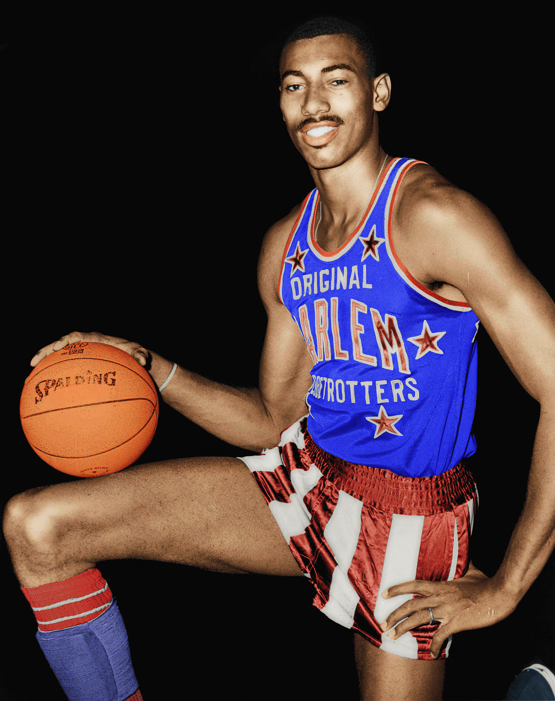
Wilton Norman «Wilt» Chamberlain (Filadelfia, 21 de agosto de 1936-Los Ángeles, 12 de octubre de 1999) fue un baloncestista estadounidense que disputó 14 temporadas en la NBA. Con 2,16 metros de altura, jugaba en la posición de pívot. Durante sus años en activo, militó en Philadelphia/San Francisco Warriors, Philadelphia 76ers y Los Angeles Lakers. Conocido como Wilt the stilt (apodo que odiaba) o The Big Dipper, es considerado por algunos especialistas como el jugador de baloncesto más dominante de todos los tiempos. Fue nombrado jugador más valioso de la NBA en cuatro ocasiones, integró el mejor quinteto de la NBA en siete temporadas y el segundo quinteto en tres, y figuró en la lista de los 50 mejores jugadores de la historia de la NBA. Sus hazañas impulsaron a las autoridades a cambiar algunas reglas de juego. Chamberlain es el jugador que posee más récords históricos de la NBA, con más de 70, muchos de ellos seguidos por registros de él mismo. Es el único en haber anotado 100 puntos en un solo partido de la NBA y en haber promediado 40 o 50 puntos en una temporada. Asimismo, ganó 7 veces el título de máximo anotador de la NBA, 11 títulos de máximo reboteador, 9 de porcentaje de tiros de campo e incluso lideró en asistencias una temporada, siendo el único no base en conseguirlo. Chamberlain es el único en la historia de la competición en promediar al menos 30 puntos y 20 rebotes por partido en una temporada, un logro que alcanzó en siete temporadas consecutivas. También es el único jugador en promediar al menos 30 puntos y 20 rebotes por partido durante toda su carrera en la NBA.
Larry Bird
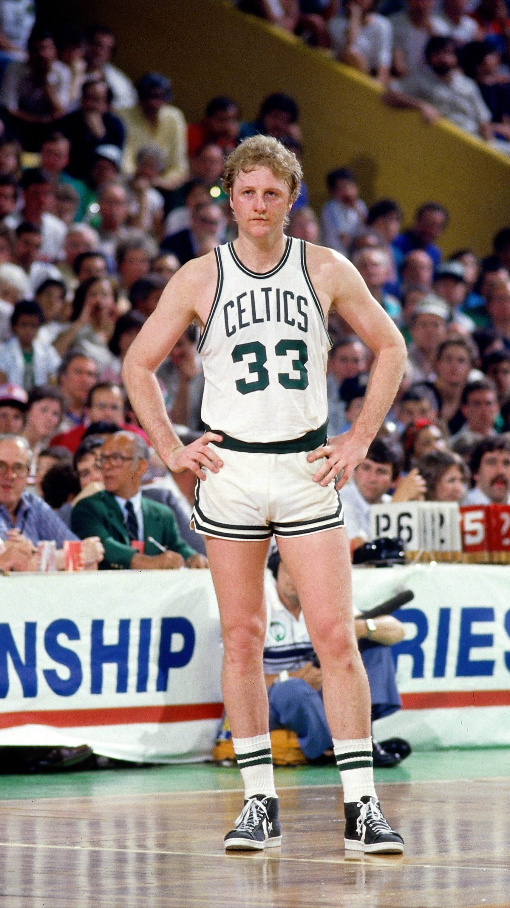
Larry Joe Bird (West Baden Springs, Indiana, 7 de diciembre de 1956) es un exjugador de baloncesto estadounidense que disputó 13 temporadas en la NBA, todas ellas con los Boston Celtics, con los que consiguió tres campeonatos: 1981, 1984 y 1986. Con una estatura de 2,06 metros, es considerado por muchos como el mejor alero en la historia de la NBA y una de las más grandes figuras del baloncesto mundial. Formó, junto con Kevin McHale y Robert Parish, uno de los mejores frontcourt de la historia de la NBA. Dicho trío es el segundo con más victorias de temporada regular en la historia (540) detrás del formado por Tim Duncan, Tony Parker y Manu Ginóbili. Bird fue incluido en el Mejor Equipo de la Historia del 50 Aniversario de la NBA en 1996, así como en el Naismith Memorial Basketball Hall of Fame en 1998. También apareció en el mejor quinteto de la NBA en nueve temporadas, de las que fue el jugador más valioso tres años consecutivos: 1984, 1985 y 1986, segundo en 1981, 1982, 1983 y 1988, y tercero en 1987, lo que da una idea de su dominio individual ejercido en la NBA durante los años 1980. Es el único alero en la historia de la liga que promedió a lo largo de su carrera 10 o más rebotes, 5 o más asistencias y 20 o más puntos por partido. Es uno de los siete miembros del selecto "Club del 50-40-90" (jugadores que han logrado un porcentaje de tiro del 50% o más en tiros de campo, un 40% o más en triples y un 90% o más en tiros libres durante toda una temporada) Tras retirarse en 1992 debido a sus problemas crónicos en la espalda, estuvo en los Indiana Pacers, primero como entrenador (1997-2000) y posteriormente como Presidente de Operaciones relacionadas con el baloncesto (2003-2012 y 2013-2017). Es la única persona en la historia de la NBA en ser nombrado Rookie del Año, MVP de la temporada regular, MVP de las finales, MVP del All-Star Game, Entrenador del Año y Ejecutivo del Año.
Tim Duncan
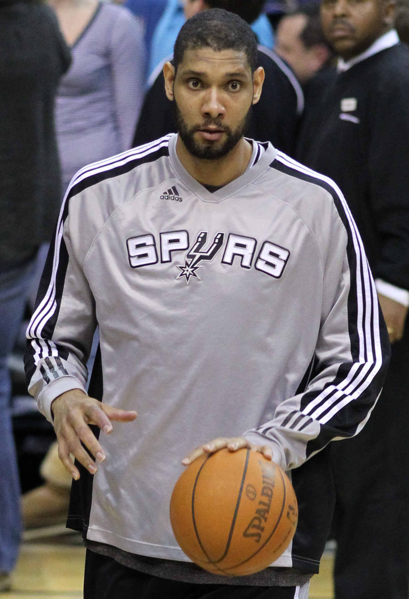
Timothy Theodore Duncan (Christiansted, Saint Croix, Islas Vírgenes de los Estados Unidos, 25 de abril de 1976), más conocido como Tim Duncan, es un exjugador de baloncesto estadounidense que jugó como ala-pívot o pívot en los San Antonio Spurs de la NBA desde la temporada 1997-98 hasta la 2015-16. Obtuvo cinco anillos de campeón, dos premios al jugador más valioso de la NBA, tres veces elegido MVP de las Finales, diez apariciones en el mejor quinteto de la NBA y tres en el segundo. También ha aparecido en 15 ediciones del All-Star Game de la NBA. El 11 de julio de 2016 los San Antonio Spurs anunciaron la retirada del legendario ala-pívot y el 18 de diciembre de ese mismo año, le homenajearon retirando su camiseta con el número 21. Desde la temporada 2019-20 ejerce como entrenador asistente de Gregg Popovich en el banquillo de los Spurs. El 4 de abril de 2020, fue elegido para formar parte de la clase del 2020 del Basketball Hall of Fame.
Kobe Bryant
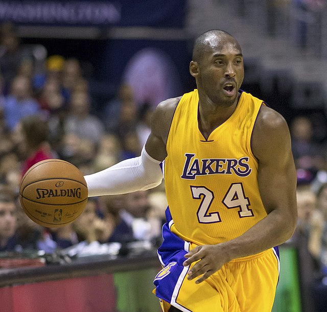
Kobe Bean Bryant (Filadelfia, Pensilvania, 23 de agosto de 1978-Calabasas, California, 26 de enero de 2020)fue un baloncestista estadounidense que jugaba en la posición de escolta. Disputó veinte temporadas en la NBA, todas ellas en Los Angeles Lakers. Hijo del exjugador de baloncesto Joe Bryant, está considerado como uno de los mejores baloncestistas de todos los tiempos. Ganó cinco campeonatos de la NBA con los Lakers y dos medallas de oro olímpicas con la selección estadounidense, fue dieciocho veces All-Star, quince veces All-NBA (once de ellas en el primer quinteto), doce veces miembro de los mejores quintetos defensivos, MVP de la Temporada en 2008, MVP de las Finales en 2009 y 2010 y máximo anotador de la liga en 2006 y 2007. En 2020 fue incluido de manera póstuma en el Salón de la Fama del Baloncesto. Bryant dio el salto a la NBA directamente desde el instituto Lower Merion de Filadelfia en 1996, año en el que fue seleccionado por los Charlotte Hornets en el Draft, pero fue traspasado inmediatamente a los Lakers. Junto con Shaquille O'Neal, llevó a su equipo a la consecución de tres títulos consecutivos de la NBA entre 2000 y 2002. Tras la salida de O'Neal en 2004, Bryant se convirtió en la estrella en solitario del equipo angelino y entre 2005 y 2007 logró varias plusmarcas de anotación. Después de perder las Finales en 2008, llevó a los Lakers a la obtención de dos campeonatos consecutivos en 2009 y 2010. Las lesiones lastraron sus últimos años de carrera y se retiró al término de la temporada 2015-16.Bryant ocupa el cuarto lugar en la lista de máximos anotadores de la historia de la NBA, tanto en temporada regular como en Playoffs, y los 81 puntos que anotó ante los Toronto Raptors en enero de 2006 son la segunda mejor anotación de la historia de la NBA por detrás de los 100 puntos de Wilt Chamberlain en 1962. El 18 de diciembre de 2017 sus camisetas con los dorsales 8 y 24 fueron retiradas por los Lakers, siendo la primera vez en la historia de la NBA que un equipo retira dos números distintos a un mismo jugador. Ese mismo día se presentó su corto «Dear Basketball», dirigido por Glen Keane, y en el que narró, en imágenes, la carta que escribió en The Players' Tribune anunciando su retirada.18 Dicho corto ganó un Óscar en la categoría mejor corto de animación. Falleció el 26 de enero de 2020 a los 41 años de edad en un accidente de helicóptero en la localidad californiana de Calabasas junto a otras ocho personas (incluido el piloto), y entre quienes se encontraba su hija Gianna Maria de 13 años.
Shaquille O’Neal
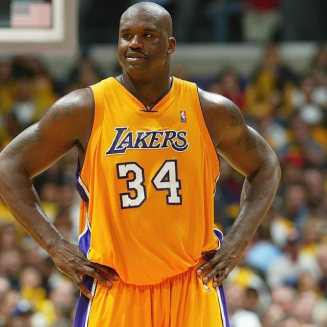
Shaquille Rashaun O’Neal (Newark, Nueva Jersey, 6 de marzo de 1972) es un exjugador estadounidense de baloncesto, que se desempeñaba como pívot. Es considerado como uno de los jugadores más dominantes de la historia de la NBA. O'Neal ganó cuatro campeonatos de la NBA, tres con Los Angeles Lakers y uno con Miami Heat, además de finalizar subcampeón con Orlando Magic en 1995 y con Los Angeles Lakers en 2004. En cuanto a galardones individuales, O'Neal ha logrado un MVP de la temporada en 2000, ocho apariciones en el mejor quinteto de la NBA, tres MVP de las Finales, tres MVP del All-Star Game (el último de ellos, compartido con su excompañero de los Lakers Kobe Bryant) y el Rookie del Año. Es el octavo máximo anotador de la historia de la NBA con 28 596 puntos. En la selección estadounidense, O'Neal cosechó el oro olímpico en 1996 y el Mundial de 1994 en Canadá, siendo elegido MVP de dicho campeonato. El 11 de septiembre de 2008, O'Neal declaró que se retiraría del baloncesto en 735 días, lo que significaba que tras la temporada 2009-10 se haría oficial su retirada. Sin embargo, continuó en la plantilla de los Boston Celtics una temporada más. Una vez finalizada, el 1 de junio de 2011 anunció a través de la red social Twitter su retirada definitiva de las canchas de baloncesto. Tras su retirada, comenzó a colaborar en Inside NBA para el canal estadounidense TNT, haciendo una breve sección conocida como Shaqtin' a Fool, en la que repasa los momentos más cómicos ocurridos durante la semana. El 4 de abril de 2016 se hizo oficial su ingreso en el Salón de la Fama del Baloncesto.8
Oscar Robertson
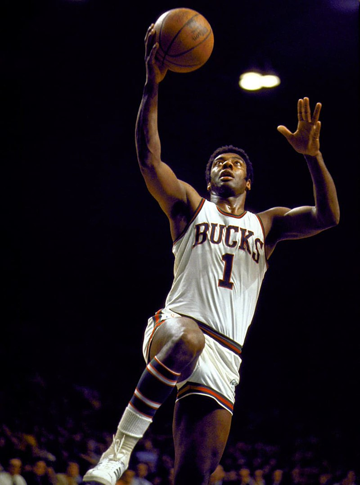
Oscar Palmer Robertson (n. Charlotte, Tennessee; 24 de noviembre de 1938) es un exjugador de baloncesto estadounidense que disputó catorce temporadas en la NBA en los años 60, jugando con Cincinnati Royals y Milwaukee Bucks. Con 1,96 metros de estatura y 100 kilos de peso, jugaba en la posición de base. Robertson fue doce veces All Star, 9 veces incluido en el mejor quinteto de la liga, 2 en el segundo y una vez nombrado Jugador más valioso de la NBA, en las 14 temporadas que disputó como profesional. Junto con Russell Westbrook, ha sido el único jugador de la historia de NBA en promediar un triple-doble a lo largo de una temporada, y está considerado como uno de los mejores y más versátiles jugadores de la historia de la NBA. Fue conocido con el sobrenombre de "The Big O" (El gran "O"). Por sus logros como jugador, Robertson fue incluido en el Basketball Hall of Fame en 1980, y fue votado como uno de los 50 mejores jugadores de la historia de la NBA en 1996. La Asociación de Periodistas de Baloncesto de Estados Unidos decidió usar su nombre para renombrar los premios al jugador más valioso del baloncesto universitario, reconvirtiéndolo en el Oscar Robertson Trophy en 1998. Además, fue una de las cinco personas que inauguraron el Salón de la Fama del Baloncesto Universitario en 2006. Robertson también lideró la que se denominó Oscar Robertson suit, en 1970, un movimiento sindical que impuso a la liga importantes reformas en lo que a agentes libres y reglas del draft se refiere, lo que conllevó un aumento de los salarios de los jugadores.
Hakeem Olajuwon
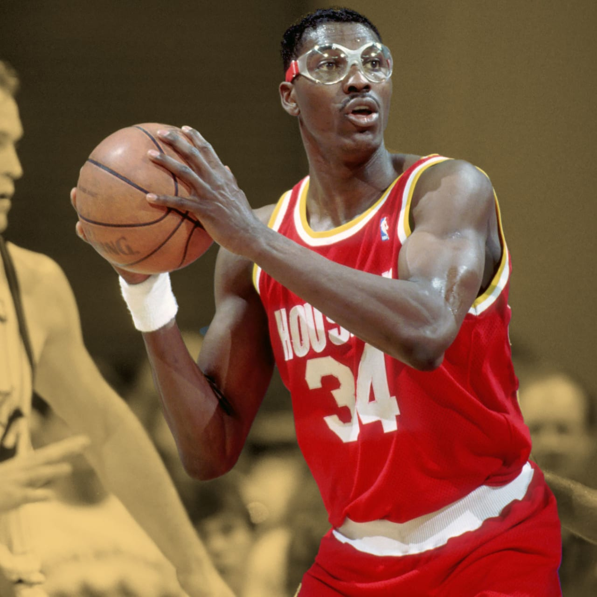
Hakeem Abdul Olajuwon, (Lagos, 21 de enero de 1963), es un exjugador de baloncesto nigeriano, nacionalizado estadounidense, que disputó 18 temporadas en la NBA, 17 de ellas con los Houston Rockets. Con 2,13 metros de estatura, jugaba en la posición de pívot. Fue apodado Hakeem the Dream por haber salido de Nigeria y en tan solo unos años haber alcanzado el sueño americano de gran deportista y ganador de títulos. Es considerado por la mayoría de analistas como uno de los mejores pívots de la historia. Obtuvo dos anillos de campeón de la NBA en 1994 y 1995, resultando MVP de las Finales en ambas ocasiones y MVP de la temporada 1994. Integró el mejor quinteto de la NBA en seis temporadas, el segundo quinteto en tres y el tercer quinteto en otras tres, y jugó 12 ediciones del All-Star. Además ganó la medalla de oro en los Juegos Olímpicos de 1996 con la selección de Estados Unidos. En 1996 figuró entre los 50 mejores jugadores de la historia de la NBA, y en 2008 ingresó al Basketball Hall of Fame.
Stephen Curry

Wardell Stephen Curry II (Akron, Ohio; 14 de marzo de 1988), más conocido como Stephen Curry, es un jugador estadounidense de baloncesto que pertenece a la plantilla de los Golden State Warriors de la NBA. Con 1,88 metros de altura, juega en la posición de base. Hijo del exjugador de la NBA Dell Curry y hermano mayor del también jugador Seth Curry, jugó a nivel universitario tres años en Davidson y fue elegido por los Warriors en la séptima posición del Draft de la NBA de 2009. A lo largo de su carrera ha sido cuatro veces campeón de la NBA, dos veces MVP de la temporada regular y una vez MVP de las Finales, además de dos Copas del Mundo con la selección estadounidense. Está considerado como el mejor tirador de la historia del baloncesto y es el líder histórico de la NBA en triples anotados.
Kevin Durant
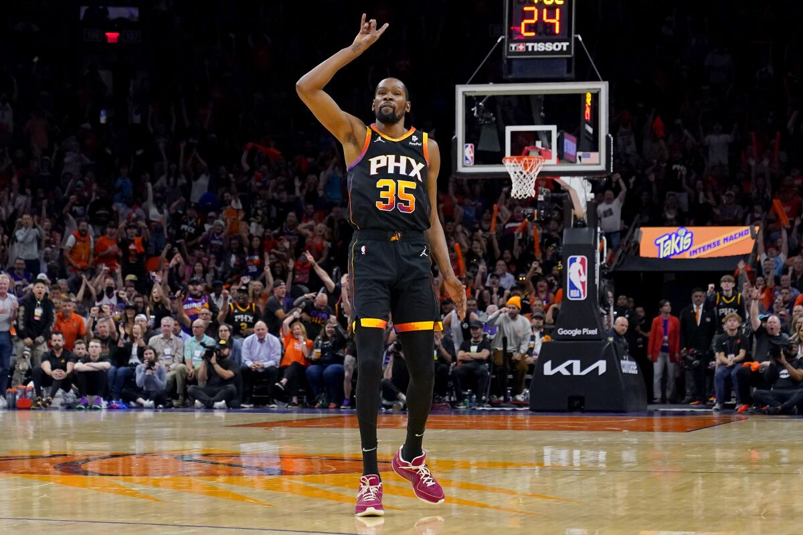
Kevin Wayne Durant (Washington D. C., 29 de septiembre de 1988) es un jugador profesional de baloncesto estadounidense que actualmente pertenece a la plantilla de los Phoenix Suns de la NBA. Con 2,08 metros de altura, juega en la posición de alero. Fue campeón de la NBA y MVP de las finales en 2017 y 2018; campeón del mundo en 2010 y medalla de oro olímpica con la selección de Estados Unidos en 2012, 2016 y 2021. También fue MVP de la temporada en 2014, y está considerado como uno de los mejores jugadores del mundo. Es un jugador con una excelente capacidad para el tiro exterior y tiro de media distancia y que gracias a su envergadura también puede jugar de ala-pívot. Su dorsal con el número 35 se debe a su entrenador de high school, Charles Craig, quien falleció a esa edad.
Julius Erving
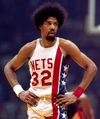
Julius Winfield Erving II (nacido el 22 de febrero de 1950 en Roosevelt, Nueva York), conocido popularmente como Dr. J, es un exjugador de baloncesto estadounidense que disputó cinco temporadas en la ABA y posteriormente once más en la NBA. Con 2,01 metros de estatura, jugaba en la posición de Alero. Erving ganó tres campeonatos, cuatro premios MVP y tres títulos de máximo anotador tanto en la ABA, con Virginia Squires y New York Nets, como en la NBA, con Philadelphia 76ers. Es el quinto máximo anotador de la historia del baloncesto profesional con 30.026 puntos (NBA y ABA combinados). Erving fue nombrado uno de los 50 mejores jugadores de la historia de la NBA y en 1993 fue incluido en el Basketball Hall of Fame. Además, fue uno de los pioneros del mate, popularizando el espectacular "Tomahawk". Desde el año 2015, el Naismith Memorial Basketball Hall of Fame otorga el Julius Erving Small Forward of the Year Award al mejor alero de la División I de la NCAA.
Jerry West
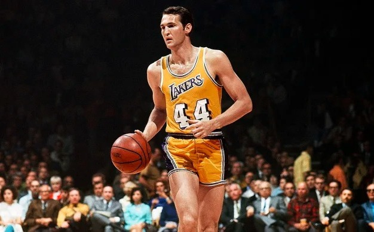
Jerome Alan "Jerry" West (Chelyan, Virginia Occidental; 28 de mayo de 1938), es un exjugador de baloncesto estadounidense que destacó en las décadas de los 1960 y 1970 en Los Angeles Lakers. Ha logrado grandes éxitos, además, como entrenador y como ejecutivo en la NBA. West lideró a la Universidad de West Virginia al campeonato de la NCAA en 1959, siendo nombrado MVP de la final, antes de jugar durante 14 temporadas en los Lakers, ganando un campeonato de la NBA en 1972. Junto con Oscar Robertson ganó la medalla de oro en los Juegos Olímpicos de Roma de 1960. El jugador apareció en el mejor quinteto de la NBA en diez temporadas, aunque nunca fue nombrado jugador más valioso. Fue incluido en el Salón de la Fama en 1980, y su silueta fue la elegida para dar forma al logotipo de la NBA. Sus apodos eran "Mr. Clutch", por su habilidad y destreza en los momentos finales de los partidos; "Zeke from Cabin Creek", dado por su compañero Elgin Baylor ; y "The Logo" por ser su figura la que ilustra el logo de la NBA. Desde junio de 2017 es miembro de la junta ejecutiva de la franquicia de Los Angeles Clippers.
Karl Malone
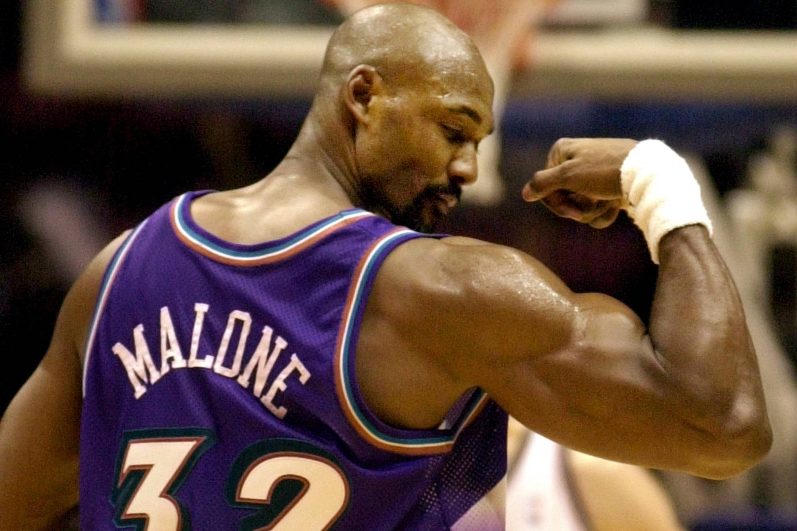
Karl Anthony Malone (Summerfield, Luisiana; 24 de julio de 1963) es un exjugador de baloncesto estadounidense, miembro del Basketball Hall of Fame que disputó 19 temporadas en la NBA, 18 de ellas en los Utah Jazz, donde formó, junto con el base John Stockton, una de las parejas más relevantes de la historia de la NBA. A lo largo de su carrera consiguió dos medallas de oro en Juegos Olímpicos, dos premios a jugador más valioso de la NBA y 11 nominaciones en el mejor quinteto de la NBA, siendo además el quinto jugador que más veces ha estado seleccionado para disputar el All-Star Game de la NBA con 14 convocatorias. Malone es el tercer máximo anotador de la historia de la NBA con 36 928 puntos, solo por detrás de LeBron James y Kareem Abdul-Jabbar. Era conocido por el sobrenombre de "The Mailman" (el cartero) por su capacidad de anotación, su velocidad y su reparto de canastas.
Moses Malone
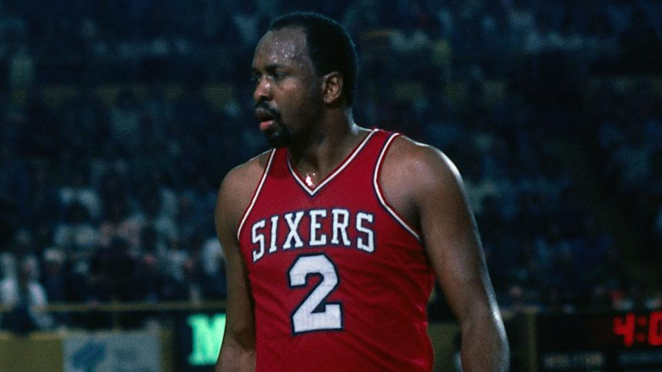
Moses Eugene Malone (Petersburg, Virginia, 23 de marzo de 1955 - Norfolk, Virginia, 13 de septiembre de 2015) fue un baloncestista profesional que actuó tanto en la NBA como en la ABA. Malone jugó 21 temporadas como profesional. Antes de retirarse del baloncesto, fue el último participante de la ABA en jugar en la NBA. Con 2,08 metros de altura, jugaba en la posición de pívot. Falleció el 13 de septiembre de 2015 a los 60 años a causa de un ataque al corazón mientras dormía.1
Dirk Nowitzki
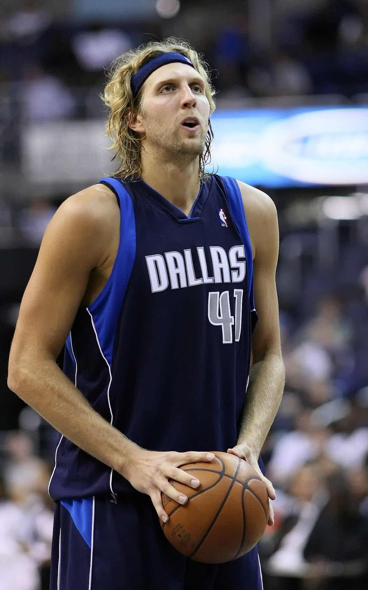
Dirk Werner Nowitzki (Wurzburgo, República Federal de Alemania, 19 de junio de 1978) es un exjugador alemán de baloncesto que jugó 21 temporadas en los Dallas Mavericks de la NBA y otras 4 en la liga alemana. Es considerado uno de los mejores ala-pívots de todos los tiempos. Nowitzki fue elegido en novena posición del Draft de 1998 por Milwaukee Bucks y traspasado inmediatamente a Dallas Mavericks, donde jugó desde entonces hasta su retirada en 2019. Con sus 2,13 m de estatura era uno de los jugadores más versátiles de la NBA. Nowitzki cuenta con un anillo de campeón de la NBA y un título de MVP de las finales de la temporada 2010-11 de la NBA. Además ha sido All-Star en catorce ocasiones, 4 veces elegido para el equipo ideal de la NBA (2005, 2006, 2007, 2009), 5 veces para el segundo equipo (2002, 2003, 2008, 2010, 2011) y 3 veces para el tercero (2001, 2004, 2012). Por otro lado, es el primer jugador europeo en la historia de la NBA en recibir el MVP en la temporada 2006-07 y en ganar el concurso de triples en el All-Star Game de 2006. Dirk solía ser el líder de la selección de baloncesto de Alemania, a la que llevó a obtener la medalla de bronce en el Mundial de Indianápolis 2002 y la de plata en el Eurobasket 2005. En ambos campeonatos fue máximo anotador y fue elegido MVP. El periódico italiano Gazzetta dello Sport le otorgó en seis ocasiones el galardón Euroscar de Mejor Jugador Europeo del Año. En 2005, además de este premio, se llevó el "Mr. Europa" de la revista italiana Superbasket y el Jugador del Año Europeo de la FIBA. Premio que repitió en 2011.
Kevin Garnett
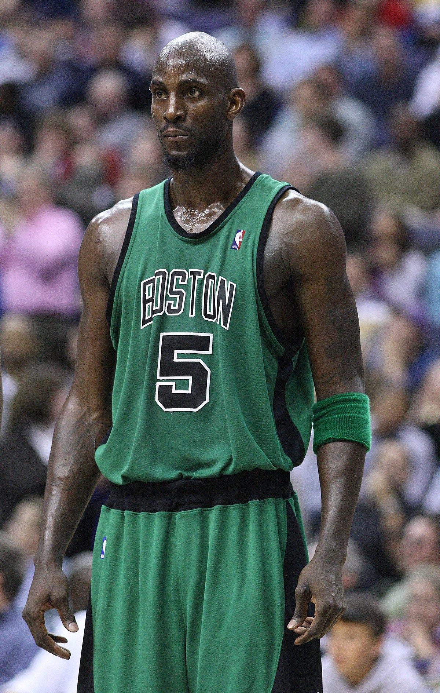
Kevin Maurice Garnett (Greenville, Carolina del Sur, 19 de mayo de 1976) es un exjugador de baloncesto estadounidense que disputó 21 temporadas en la NBA. Llegó a la liga en 1995 directamente desde el instituto, convirtiéndose en el primer jugador en hacerlo en 20 años, y, desde entonces, ha sido All-Star en 15 ocasiones, ha ganado un campeonato de la NBA, el MVP de la Temporada y del All-Star, el premio al Mejor Defensor del Año y ha sido incluido en los mejores quintetos de la liga y defensivos durante ocho temporadas. También es el jugador que más temporadas ha promediado como mínimo 20 puntos, 10 rebotes y 5 asistencias en la historia de la NBA. Está considerado uno de los mejores jugadores de la historia de la NBA y junto a Tim Duncan el mejor de la historia en su posición. Conocido por los apodos "The Big Ticket", "KG" y "The Kid", en 2007 dejó Minnesota Timberwolves, su equipo durante más de diez años, para fichar por Boston Celtics. Su traspaso batió un récord de la NBA, ya que Minnesota Timberwolves recibió a cambio la impresionante cantidad de cinco jugadores, entre ellos Al Jefferson, Ryan Gomes y Gerald Green, y dos selecciones de draft. Dicho récord no fue superado hasta 2017 cuando Chris Paul fue traspasado de Los Angeles Clippers a Houston Rockets por siete jugadores y una elección de draft. Garnett fue hasta 2022 el baloncestista que más dinero había ganado en la historia de este deporte, con un total de 334 millones de dólares en salarios durante su carrera. Tras retirarse trabajó temporalmente como analista de la NBA en TNT en un show llamado "Area 21". El 4 de abril de 2020, fue elegido para formar parte de la clase del 2020 del Basketball Hall of Fame. El 13 de marzo de 2022 los Boston Celtics procedieron a retirar su camiseta con el número 5.